by providing an interface to visual content based on natural language. This study explores the usage patterns and creative interactions that field experts tend to have while using text-to-image technology. The study was conducted using a Discord server over the course of 4 months, gathering 76 participants ranging from different related fields such as graphic design, photography and digital illustration. The participants were presented with a text-to-image bot and given a private space to use the technology for their own purpose. Qualitative data, collected through interviews and meetings, was complemented by quantitative measures extracted from server-gathered interaction data, including usage, prompts used, and types of operations (text-to-image, image-to-image, prompt interpolation). The study results reveal that the distribution of images generated per user (usage) follows an exponential pattern, and there is a negative correlation between expectations of text-image alignment and the Tolerance for Ambiguity (TA) personality trait (Norton 1975; Furnham and Marks 2013; Zenasni, Besançon, and Lubart 2008; Herman et al. 2010). These findings constitute some preliminary evidence suggesting that the adoption pattern of this new technology is dependent on social factors. Additionally, the findings suggest that expectations regarding this technology could be linked to TA, potentially resulting from an individual’s attunement to a specific TOC.
Text-to-image technology made a substantial impact in the field of computer vision since its inception. On Jan 6, 2021, OpenAI released CLIP, a model that was trained on 400 million image-text pairs, able to create a joint latent space combining visual and textual information (Radford et al. 2021). CLIP works in both directions, in the sense that it is not only capable of identifying objects in a picture, but also to guide the generation of images starting from text. Since the public release of CLIP, many open-source implementations of image generators based on its capabilities have been released, and their generated output has started to flood the internet.
CLIP and, more generally, the idea that we can control a generative model by conditioning its output on text (or, more precisely, token embeddings) constitutes a dramatic interface improvement. As it should be evident from all the TOCs reviewed in Section 2.1, language seems to play central role when dealing with concepts. CLIP effectively provides a latent space that unifies lexical and visual concepts. This multi-modality binds the compositional elements of language to the visual domain, allowing the generation of novel content obtained through the sophisticated combination making capabilities afforded by the pre-trained token embeddings.
Naturally, the limitations that neural networks generally encounter when dealing with analytical concepts are still in place. For example, study participants quickly find out that quantifiers have little effect on image generation: the prompt yields a random number of circles (see Figure 6.1). This should not be surprising, given the nature of the D[] operator, yet the technological opacity might conceal the reasons of this behavior. Our habitual way of thinking about intelligent systems perhaps creates the expectation that they must be analytical, yet in this case we are dealing with something completely different.
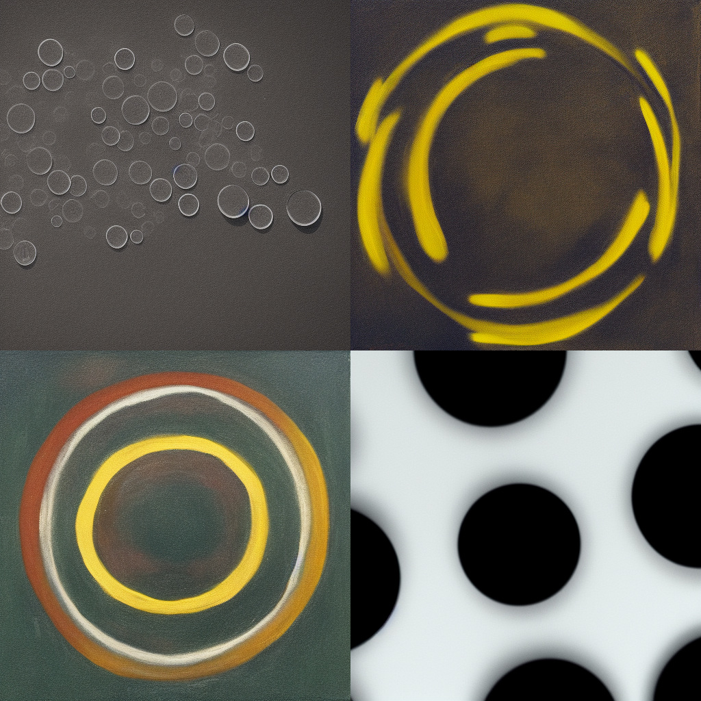
Referring back to the birth of generative art and the experiments with programmable plotters, it seems that R[Program] and D[Language] are very different, yet complementary, ways to manipulate visual concepts. Ultimately, both methods make use of randomness to generate variety, but in the former probabilities are defined by the programmer, whereas in the latter they are determined during training. For the sake of completeness, the post-phenomenological form of these two mediated interactions might be summarized as follows (from Section 3.1):
I → Plotter / (PlotterSoftware → R[Design]) (— Printed Design)
I → Stable Diffusion / (CLIP → D[Image Description]) (— Generated Image)
r0.42
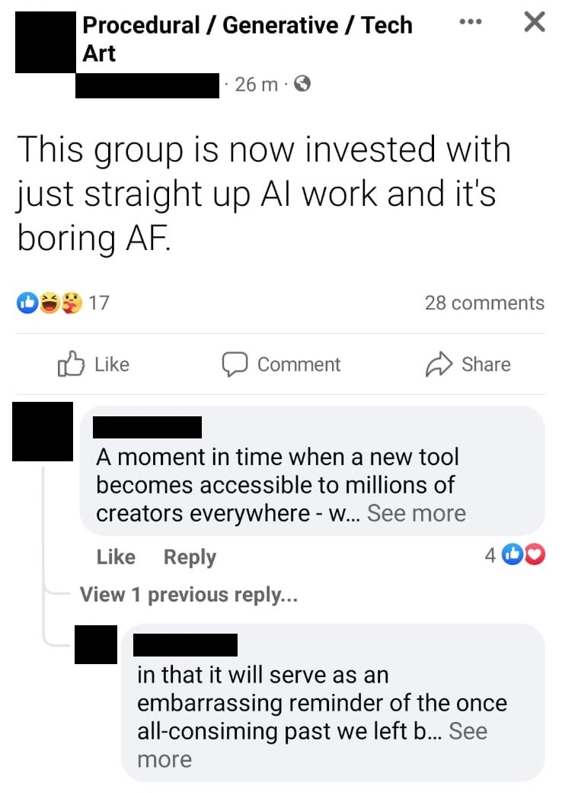
After the release of CLIP, the ML community began exploring its capabilities in various directions. Ryan Murdock combined CLIP with BigGAN (Brock, Donahue, and Simonyan 2018) to create BigSleep1, which was one of the first publicly available tools in this space. Katherine Crowson experimented with CLIP guidance in a novel method for image synthesis known as diffusion, as proposed by (Dhariwal and Nichol 2021). As 2021 drew to a close, numerous forums and user groups devoted to generative art began discussing image generation and their workflows as Python scripts that could be run on Google’s Colab, a platform that provides free (or nearly free) GPU computing time. Many of these Colab scripts utilized Crowson’s work, with Disco Diffusion2 proving particularly popular among the pioneers. As the community continued to experiment with CLIP and its potential applications, its impact on the field of ML and beyond remained a topic of ongoing interest and discussion.
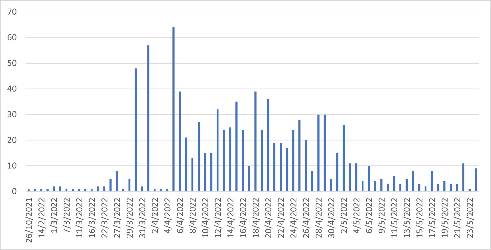
As a member of the Facebook group , I witnessed first hand the wave of controversial AI Art that took over the group in the months of April and May 2022. Around that time, images generated with Disco Diffusion were pretty much the only content being posted in that group, to the point that some members started to complain about it vigorously (e.g. Figure [fig:aiartcomplain]). Official statistics for the group are not available, but I was able to scrape the public posts and the trend is evident from the collected data, presented in Figure 6.2. The moderators of the group implemented a new strategy to handle the overwhelming volume of posts related to AI-generated images. They created a new dedicated group called and stopped publishing these types of images in the original group. As a result, there was a noticeable decrease in the number of posts around May, but this did not indicate a decline in interest. Rather, it was a deliberate effort to reduce the workload of the page admins who were struggling to keep up with the moderation demands.
On August 22nd 2022, Stability.ai released to the public Stable Diffusion (SD) v1.4 (Rombach et al. 2021), a LDM that was trained on LAION-5B, a . While OpenAI, Google, Meta, and Microsoft have all made public releases of their research and development efforts, it is rare to see them share pre-trained models with the public. These companies defend their position by citing the potential dangers of unmanaged use, and at the same time safeguard their investments from the competition. Training models at large scale is undoubtedly a big expense that is hardly justifiable if it does not produce returns. Stability.ai, however, made the bold move of releasing their model to the public allowing anyone to use it without any cost. Since its release, SD has taken the creative industry by storm.
SD outperforms the generation speed of other openly-available models by several orders of magnitude because it conducts the diffusion process in latent space, unlike previous solutions, such as Disco Diffusion, that operate at pixel-level. It is able to do so because it uses a VAE to encode and decode images and token embeddings to and from latent space3. This significant speed increase, coupled with the large-scale dataset it was trained on, make SD one of the most exciting technologies that we have seen in this field4. Indeed, it is remarkable that such a small file (less than 4GB) can encode the information of almost 6 billion images that humans have shared on the internet.
The opportunities that this technology has opened up for the general public are immense. Many developers around the world have spontaneously developed user interfaces, extensions, performance improvements and also trained alternative models that can be used to generate specific subjects or in specific styles, all in less than a year since its public release.
In September 2022, it became possible to observe this technology in action in a study that could accommodate a large group of participants simultaneously. Unfortunately, the popular interfaces of SD (official webui5, automatic1111 webui6, invokeAI7) are not designed for group use. Projects in this space often use Discord as a platform to let users try the technology in a social context. For example, Midjourney, an image generation service based on SD, is a tool that existed only as Discord bot up until very recently (at the time of this writing, Midjourney’s API access was just announced). Discord’s interface enables programmatic interaction through bots, which can respond to predefined commands and execute arbitrary code. As SD was released, many open source solutions featuring image generation pipelines via Discord became available on GitHub8 and with all these components ready, a study observing interactions with SD became possible at a larger scale.
A Discord server named MediaBots was opened on September 2nd 2022 to host the study. Participants were selected among design visual arts practitioners, photographers and design students. They were invited to a 2-hour workshop, during which they had the opportunity to use text-to-image technology. During the study, 76 people from 5 different workshops accessed the server. The workshop and participant details are summarized in Table [tab:workshops].
The server was setup so that participants would be required to join the study in order to see the content on the server. To join the study they were asked to confirm they have read the information sheet and then complete a questionnaire9 measuring:
General prior knowledge about text-to-image technology
Expectations of Human Compatibility (EHC) when interpreting keywords
Expectation of Alignment (EA) between images and text
Tolerance for Ambiguity (TA) scale (Norton 1975; Herman et al. 2010; Furnham and Marks 2013)
The purpose of including these measures was to explore whether any of these factors was correlated with the usage patterns observed in the Discord server. In particular the TA scale is hypothesized to be a proxy for a participant’s affinity towards a non-analytical approach. The intuition is that ambiguity is more characteristic of D[] than R[] so this personality trait might have some influence in the way the tools are used and perceived.
Once the participants completed the questionnaire, they were shown how to generate images through the bot’s slashcommands, essentially special messages that begin with a / that are recognized by the bot as structured instructions.
The SD bot was named , a wordplay in homage of Sandro Botticelli
which translates from Italian to roughly (much like Dall-E10 is an homage to Salvador Dalí and
the Pixar animation character Wall-E). Under the hood, Botticello is
using yasd-discord-bot11 and
dalle-flow12 to interpret the commands and
handle the generation queue. The choice of this architecture was made
because the jina13 interface offered by
the back-end supports queuing, making it possible for several users to
use the same bot simultaneously, a crucial feature in a workshop
setting.
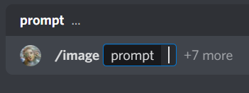
/image slashcommand
used in the interface.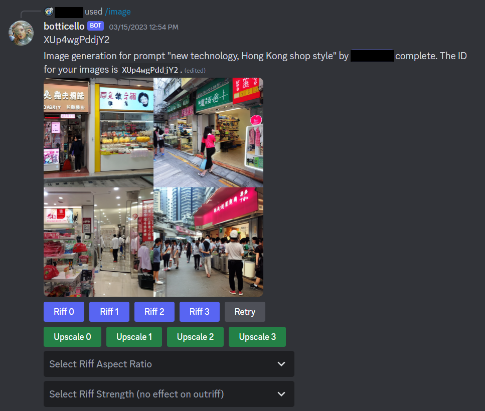
/image command.The commands offered by Botticello are:
/image: This is the first command
presented to participants and, in its simplest form, it enables to
generate an image based on a text prompt as shown in Figure 6.3. The user can also adjust other
generation parameters, such as the image resolution, the strength of the
text conditioning and number of iterations. Once the command is sent,
the generated images are returned by the bot as shown in Figure 6.4.
/riff: This command is dedicated to
image-to-image operations, that is, image generations that take an image
as starting point. It can be used with or without a text prompt to
generate variations from an image. For example, Figure [fig:rifforiginal] is used as
starting point for /riff in Figure [fig:riff]. By
adjusting the strength parameter it is possible to control how
much of the original image will be included in the output. While the
/riff command is available as a button below every output,
it is also possible to run /riff on any image uploaded into
the channel by referring to its assigned identifier.
/interpolate: This command can
generate images that progressively shift between one prompt and another
as demonstrated in Figure 6.5. This
method can be used to experiment with visual conceptual blending as it
provides combinations that span the whole range of ratios between two
concepts.
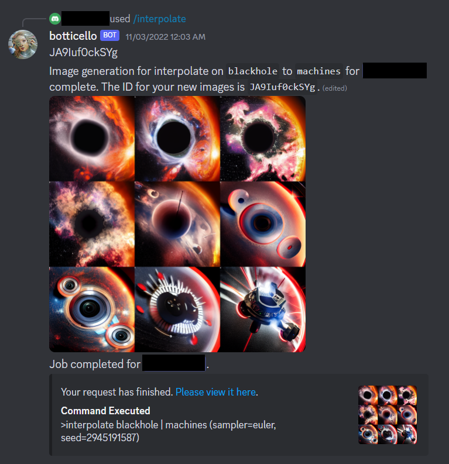
/interpolate
slashcommand interpolating between blackhole and
machine.The analysis relative to the data collected through the questionnaires during workshops and tool usage data logged by the bot is presented as follows:
For general knowledge, intuition and expectation items, distribution bar charts are presented in Figure 6.6. As both understanding and intuition are skewed towards higher values, it appears that most participants have an idea of how this technology works or at least they can intuitively grasp it.
TA scale shows good reliability when all items were included (N = 10, Cronbach’s alpha = 0.797). Constructed scale follows normal distribution (see Q-Q plot in Figure 6.7).
Number of images generated per user (or tool usage) is not normally distributed. Q-Q plot and Kolmogorof-Smirnoff confirm exponential distribution (see 6.8). Two outlier cases visible in the charts have been removed with a filter on number of generated images with condition < = 400.
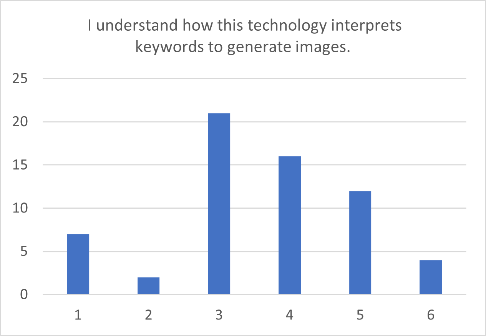
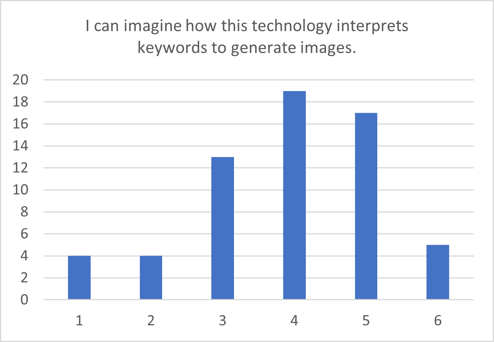
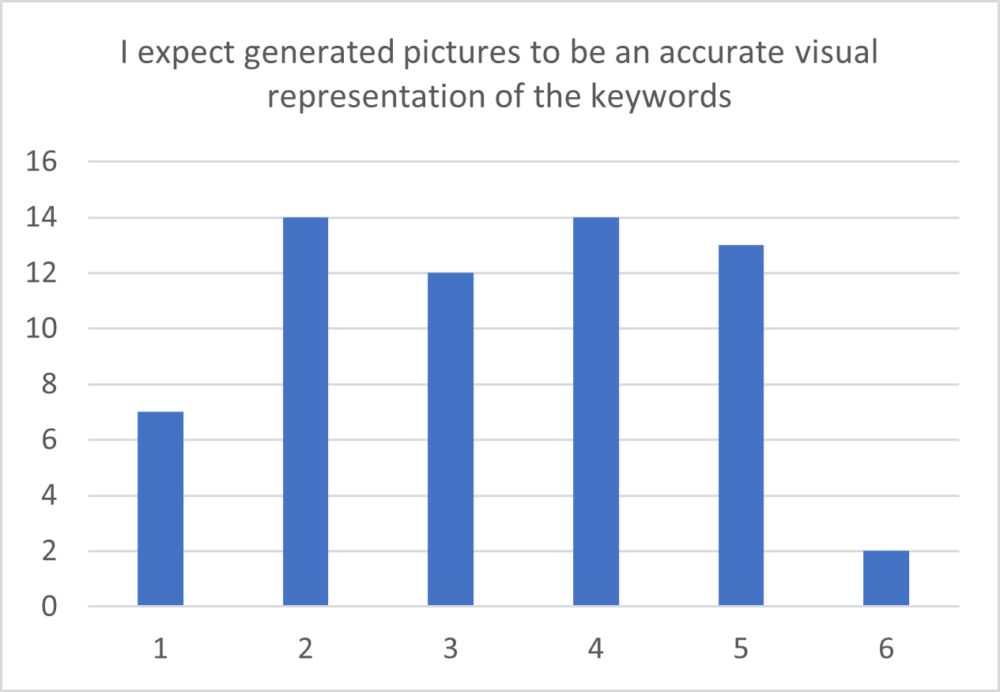
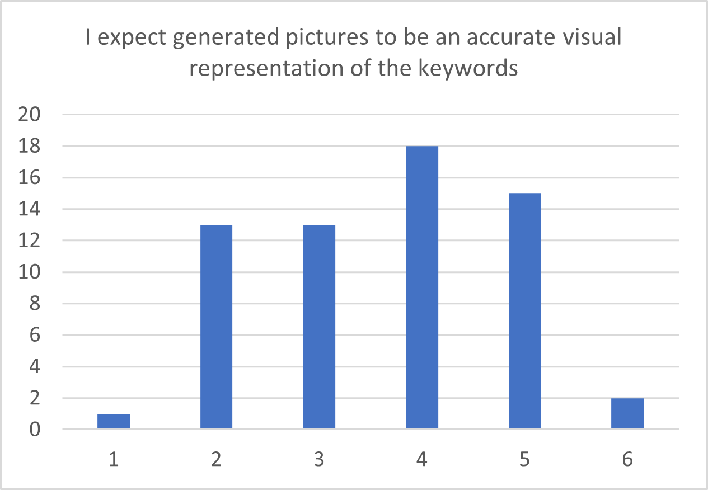
Compared to earlier studies (Herman et al. 2010; Furnham and Marks 2013), the TA scale was found to be slightly less reliable, which may be partly attributed to the impact of the COVID-19 pandemic. For instance, responses to certain items such as and may have deviated from the rest of the scale due to travel and gathering restrictions that have been in place in recent years.
The two outliers identified also reveal an interesting story. After an informal conversation with one of them, they explained the situation. They are a couple who run an Instagram page and the reason they had generated so many images was because they were posting content on social media and generating images on behalf of their friends.
The discovery of the exponential distribution in user usage suggests that a small number of individuals are responsible for the majority of the interaction. Despite the diverse range of participants, it is noteworthy that the Q-Q plot appears as a near-perfect straight line, as depicted on the right side of Figure 6.8. The exact cause of this phenomenon is not entirely clear. However, one possible explanation, based on the observation of two outliers, is that network effects play a crucial role in predicting tool usage. The relationship between the Person and Press elements could provide added incentive for individuals who are well-connected in a social network. It is worth noting that there is no significant correlation between usage and any other measured variables in the data collected, indicating that external factors may be influencing participants’ use of the bot.
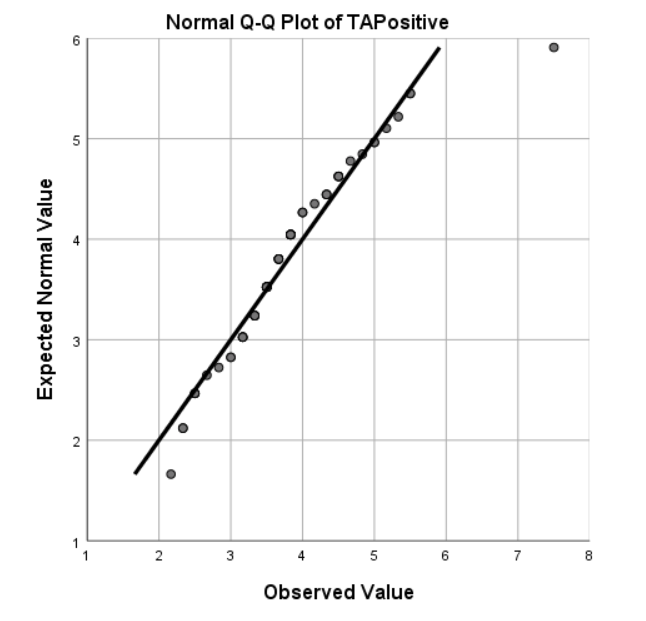
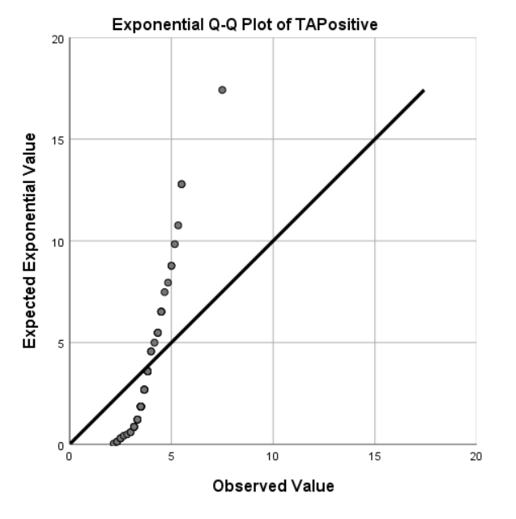
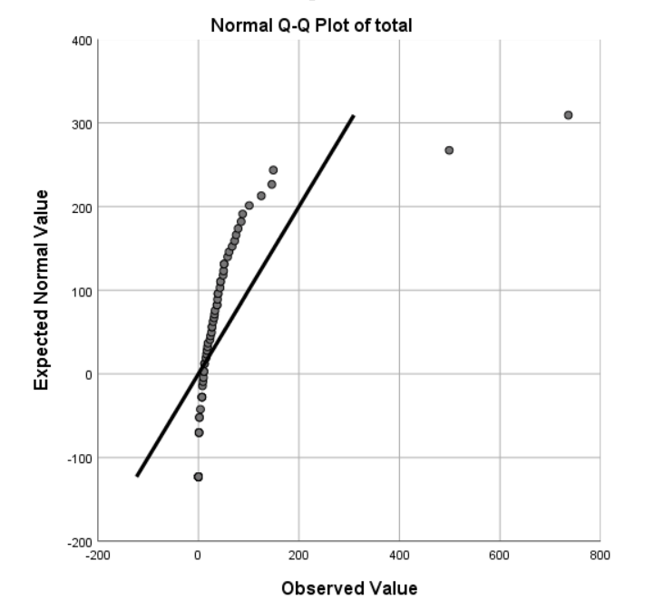
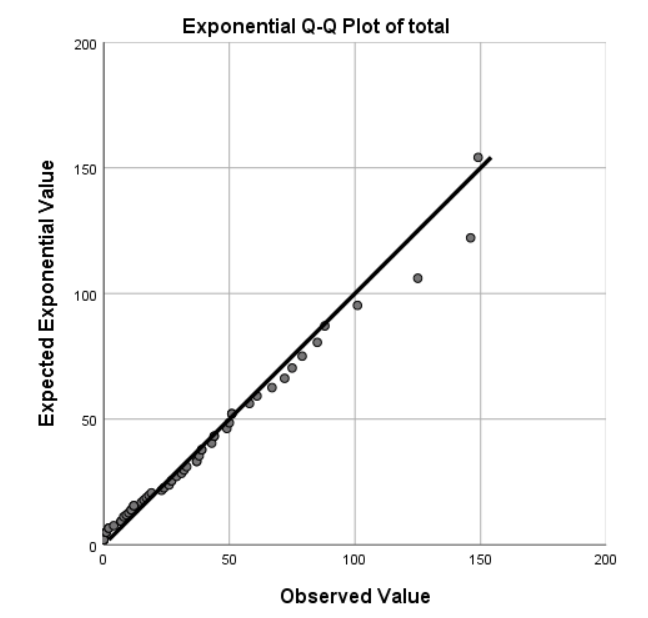
The data reveals a significant correlation between the Expectation of Alignment item, , and the TA scale variable. Additionally, the Expectation of Human Compatibility item, , exhibits a significant correlation with EA, but not with TA. This indicates that TA and EHC may exert independent effects on EA, a relationship that warrants further investigation. To evaluate this interaction, a linear regression analysis was conducted using SPSS, with the findings illustrated in Figure 6.9.
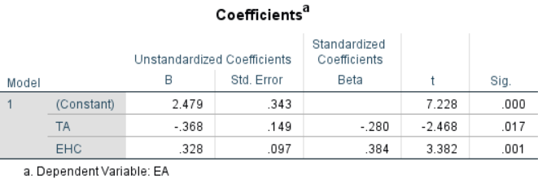
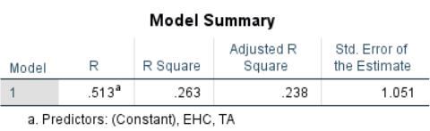
The negative coefficient attributed to TA is particularly noteworthy concerning the potential impact of this personality trait on the perception of text-to-image technology. A plausible interpretation of this result is that individuals with high TA may exhibit lower expectations regarding image alignment, as they already anticipate and accept the inherent ambiguity present in both language and images. Conversely, those who display intolerance to uncertainty are more likely to expect a clear alignment between language and images, projecting this expectation onto the technology. Nonetheless, none of the three variables exhibit a significant correlation with log(usage), implying that these expectations do not ultimately influence the inclination to use the technology.
In conclusion, we may summarize the findings according to the ACASIA modules as follows:
Association and combination. Both humans and the model play important roles in these components. As discussed in Chapter 4, pre-trained models build a latent space during training, while humans interpret the generated output, which can lead to unexpected associations. Conditional generation based on token embeddings enables the integration of language compositionality with the visual domain. This integration allows the user to visualize new combinations that can potentially stimulate further associations. When this process is iterated, it leads to a virtuous creative cycle that is incredibly fast, thanks to the efficiency of latent space diffusion, creating a feedback loop that leads to constant improvement and increasingly complex outputs.
Abstraction. As highlighted before, SD is an outstanding example of compression of information, which arguably implies abstraction. Furthermore, a language interface provides fertile ground for human abstraction. Once again, the interplay between human and non-human joint efforts in this component leads to a virtuous cycle. Yet, the abstraction afforded by D[] is not of the analytical kind, which may mislead users that have expectations of analyticity.
Selection. This component is primarily human-led. Ultimately, the users make the decisions of what images to keep or share with others. Of course, the model is making some form of selection beforehand, on behalf of humans, and arguably SD is more efficient than the previous models at selecting pixels combinations that are visually relevant to the token embeddings.
Integration and adaptation. Some aspects of these components are handled by the rule-based interaction with the Discord bot. Botticello affords a set of parameters that allow for creating small variations and minor adjustments. Ultimately, the final steps of integration and adaptation into finish product still need to be made by humans using traditional tools for graphic design and photo editing, such as Adobe Photoshop.
Overall, this study’s limitations are related primarily to the lack of a structured methodology to address this novel type of interaction. In fact, the concept of image alignment with prompts is unique to this new form of generation and calls for further investigation. Alignment in this context has both objective and subjective components and its operationalization is dependent on the TOC that a person might be attuned with. In a creative context, Alignment perhaps is not critical or even desirable. A user could be looking for novel misaligned associations and combinations. In this sense, the non-analytic nature of D[] can be considered an asset, echoing the hypothesis that D[] is an inherently creative operator, as (Hoorn 2023) suggests.
Moreover, the initial evidence discovered in this study suggesting the hypothesis of a socially driven adoption of this tool, remains inconclusive. The absence of correlation between number of images generated per user (tool usage) and any of the measured variables appears to rule out factors related to personal aspects, such as technology acceptance (TA) and expectations (EHC and EA), as drivers of use. However, the qualitative evidence emerged from this study in support of Press-driven adoption is not definitive and can only indicate a direction for further research.
In conclusion, the relationship between EA, TA and EHC constitutes an unexpected but relevant finding of this research. It points to a possible link between personality traits such as TA and expectations about the behavior of text-to-image technology. Further research is needed to investigate whether this connection is generalizable to all technologies adopting D[]. This finding also suggest that there might be individual differences in how we expect concepts to behave, implying that humans develop an unconscious preference for a TOC, which they then tend to ascribe to the technology they use.
is never a process that begins from scratch: to design is always to redesign. There is always something that exists first as a given, as an issue, as a problem.
Source code available at: https://github.com/lucidrains/big-sleep↩︎
Source code available at: https://github.com/alembics/disco-diffusion↩︎
For an image of resolution 512x512, the pixel space is 3 × 512 × 512, which is then encoded/decoded by the VAE to a 4 × 64 × 64 latent space where the diffusion process takes place more efficiently.↩︎
At the time of this writing.↩︎
Project page: https://beta.dreamstudio.ai/generate↩︎
Project page: https://github.com/AUTOMATIC1111/stable-diffusion-webui↩︎
Project page: https://github.com/invoke-ai/InvokeAI↩︎
GitHub (https://github.com) is a web-based platform that provides version control and collaboration services using Git, a distributed version control system. It allows developers to create, manage, and collaborate on repositories (projects) that contain source code, documentation, and other files.↩︎
See Appendix 10 for the full list of items in the questionnaire.↩︎
DALL-E is a machine learning-based image generation system created by OpenAI.↩︎
Source code available at: https://github.com/AmericanPresidentJimmyCarter/yasd-discord-bot↩︎
Source code available at: https://github.com/jina-ai/dalle-flow↩︎
Source code available at: https://github.com/jina-ai/jina↩︎